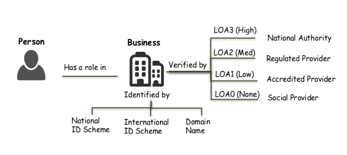
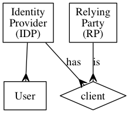
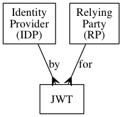
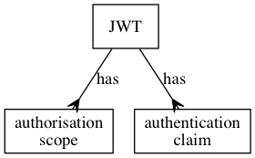
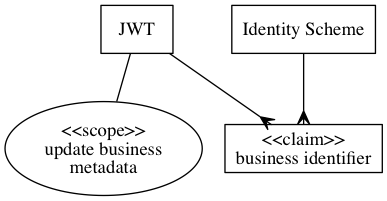
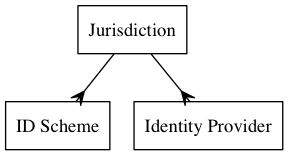
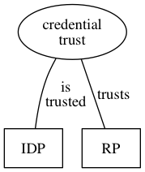
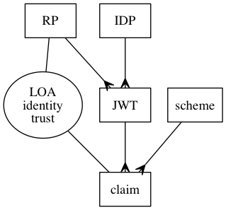
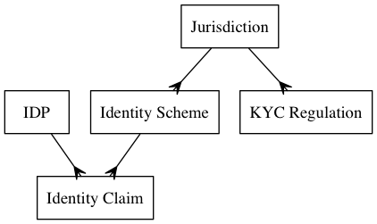

- Spec ID:
ausdigital-idp/1

- Editor:
- Contributors:
- Introduction
- Goals
- Status
- Glossary
- Licence
- Change Process
- Language
- IDP Concepts
- Identity Services
- Access Tokens
- Claims and Scopes
- Custom Claims and Scopes in the ADBC IDP domain
- ID Schemes and Jurisdictions
- Two kinds of trust
- How an RP trusts an IDP
- How an RP trusts a Token
- Authorisation and contractual proof of consent
- The “alias” relationship between identities
- The “on behalf of” relationship between identities
- Business network relationships between identities
- Scope
- Jurisdictions
- Identity Schemes
- Adding Jurisdictions and Identity Schemes to the standard
- Levels Of Assurance (LOA)
- Specified LOAs
- Logical Model
- LOA Rules
- Related Material
Introduction
This document describes a federated model for providing identity assurance for secure business messaging. The initial development is focussed on supporting digital procure-to-pay protocols (in particular the Australian eInvoicing Framework), however the design is intended to be more generic than that.
Integrity in the transactional network depends on business identity confidence. Specifically that a person creating a transaction does have an authorised role in a business that is identified by a recognised scheme (eg Australian Business Number). The framework can allow multiple assurance levels about an identity claim so long as the assurance level associated with any transaction is known to all parties.

The Open ID Connect (OIDC) specification is a very well established protocol for authentication and authorisation that meets the needs of the framework. Therefore this specification builds upon OIDC by specifying a set of scopes, claims, and assurance levels that will support consistent use of a marketplace of identity providers.
Goals
This specification is based on the widely used OpenID Connect standard (OIDC) for authentication and authorisation. The specification uses the defined extension mechanism in OIDC to provide a standardised set of scopes, claims, and identity assurance levels.
These extensions:
- Allow a person or online service to prove they have authorisation to update business metadata on behalf of a business. This authorisation is necessary to orchestrate the various distributed components that are involved in secure business messaging.
- Simplify the adaption of existing identity schemes for secure business messaging / procure-to-pay applications.
- Leave jurisdictions free to regulate local business identity however they like.
This specification does not create or nominate any central authority, other than to propose that identity providers implement this open standard consistently. Instead, it is based on the idea of an identity market that spans multiple jurisdictions, where participants and individuals make their own decisions about trust.
Status
This specification aims to support the Australian Digital Business Council eInvoicing initiative, and is under active development at https://github.com/ausdigital/ausdigital-idp.
Comments and feedback are encouraged and welcome. Pull requests with improvements are welcome too.
Glossary
| Phrase | Definition |
|---|---|
| ausdigital-idp/1 | This specification. |
| ausdigital-dcl/1 | Version 1 of the AusDigtial Digital Capability Locator (DCL) specification |
| ausdigital-dcp/1 | Version 1 of the AusDigital Digital Capability Publisher (IDP) specification. |
| ausdigital-tap/1 | Version 1 of the AusDigital Transaction Access Point(TAP) specification. |
| ausdigital-tap/2 | Version 2 of the AusDigital Transaction Access Point(TAP) specification. |
| ausdigital-nry/1 | Version 1 of the AusDigital Notary (NRY) specification. |
The IDP service depends on TBA and TBA.
Other TBA and TBA services both depend on the IDP service.
Licence
Copyright (c) 2016 the Editor and Contributors. All rights reserved.
This Specification is free software; you can redistribute it and/or modify it under the terms of the GNU General Public License as published by the Free Software Foundation; either version 3 of the License, or (at your option) any later version.
This Specification is distributed in the hope that it will be useful, but WITHOUT ANY WARRANTY; without even the implied warranty of MERCHANTABILITY or FITNESS FOR A PARTICULAR PURPOSE. See the GNU General Public License for more details.
You should have received a copy of the GNU General Public License along with this program; if not, see http://www.gnu.org/licenses.
Change Process
This document is governed by the 2/COSS (COSS).
Language
The key words “MUST”, “MUST NOT”, “REQUIRED”, “SHALL”, “SHALL NOT”, “SHOULD”, “SHOULD NOT”, “RECOMMENDED”, “MAY”, and “OPTIONAL” in this document are to be interpreted as described in RFC 2119.
IDP Concepts
This chapter explains concepts used in the ADBC IDP Specification.
While many of these concepts are common to other identity management systems (such as SAML), terminology is not always used consistently between communities. We aim for consistent language with the OpenID Connect community, because ADBC IDP Specification is built on OpenID Connect.
Identity Services
The ADBC IDP Specification is an application of OpenID Connect (OIDC).
Under OIDC, an Identity Provider (IDP) is a service that has multiple clients. These clients are called Relying Parties (RP). The IDP also has multiple users, which can authenticate through the IDP and provide authorisation (to RPs).
- An IDP can have multiple clients
- An RP can be a client of multiple IDPs
- An IDP can have many Users

Access Tokens
Identity service consumers are called “Relying Parties” because they rely on services provided by the IDP. In practice this means the IDP provides the RP with a token, which the RP can make use of.
OIDC provides a number of mechanisms for the RP to consume identity service. ADBC IDP Specification only uses one of them, called a (JWT)[https://jwt.io/] (JSON Web Token).
This means that the RP is issued a JWT by the IDP, and the RP relies on that JWT for information about someone’s identity, and to prove that (according to the IDP) the RP has the user’s permission to do certain things.

A JWT:
- is issued by an IDP
- is issued for an IDP’s client (RP)
- proves authentication by an identity (user)
- proves the RP has been authorised by the identity to do some things
From the RP’s perspective, something happens between a user and the IDP (authentication of the user, and authorisation of the RP based on the user’s explicit consent) and as a result, the IDP creates a JWT and provides it to the RP.
Claims and Scopes
All OIDC tokens can be used by the RP as proof that (acording to the IDP) they have some authorisation scopes and authentication claims by the IDP.
A JWT can have:
- multiple authorisation scopes (information about permission given to the RP)
- multiple authentication claims (information about the identity of the user that gave permission).
The OIDC protocol contains some standard scopes and claims which must be supported by all compliant IDPs, and also allows OIDC applications to implement custom scopes and claims if they need to. The ADBC IDP Specification makes used of a custom scope and standardised claims, which ADBC IDP Specification compliant IDPs must also support.

Custom Claims and Scopes in the ADBC IDP domain
The ADBC IDP Specification aims to support an open market of identity providers. This means there can be multiple Identity Schemes, where each scheme is represented by a type of OIDC authentication claim for different types of business identifier. Initially, the ADBC IDP Specification defines an Australian Business Number (ABN) type of identity claim, however other claims will be supported if compliant Identity Providers can be found to service them.
The ADBC IDP Specification also adds a single additional authorisation scope (“update business metadata”). This scope is required for orchestrating business message components.

For example, under the spec, a JWT may prove:
- Authentication with a claim to represent ABN 12345678
- Authorisation with scope of “update business metadata”
In this example the identity claim is against the “Australian Business Number” ID Scheme (ABN). It means that (according to this IDP), this client of the IDP is the business known as ABN 12345678, and they have given the RP permission to update their businesses metadata.
ID Schemes and Jurisdictions
Anybody can invent their own business identifier scheme. The currency of an ID Schemes in the identity market is exactly equal to the extent that it proves useful.
Some ID Schemes have an official jurisdiction. For example, the ABN is the legal business identifier in Australia. Other ID Schemes do not have an official jurisdiction. For example, DUNS numbers are managed by a company (Dun and Bradstreet). There is no need for a central authority of identifier schemes (although multiple exist). The International Standards Organisation provides a list of identifier schemes which are potential candidates.
Where a Jurisdiction has an official ID Scheme, the head of power (Government) of that jurisdiction may also provide services in the identity market. For example in Australia, the Commonwealth owned Australian Business Register operates an IDP service called VanGuard.
- An ID Scheme may have zero or one Jurisdiction
- A Jurisdiction may have zero or more ID Schemes (we would expect 1 to be the usual number)
- A Jurisdiction may operate zero or more Identity Providers
- An Identity Provider may be operated publicly (by a Jurisdiction) or privately (by a person or company).

Two kinds of trust
There are two kinds of trust that need to be taken into consideration by a RP. They relate to the strength of the identity and of credentials.
| RP Trust type | Credential Strength | Identity Strength |
|---|---|---|
| What is trusted | The authentication token (JWT) | Identity Claims within the JWT |
| Who is trusted | The Identity Provider (IDP) | The authenticated business |
| RP Confidence | The token actually represents authentication | The IDP user is who they claim to be |
| How is it trusted | Totally (all or nothing) | To a degree (level of assurance) |
Credential strength is a partially subjective assessment of the IDP itself, it relates to the RP’s confidence that the IDP user (which the IDP thinks is the business) did in fact authorise the token. Credential strength is a measure of how confident an RP can be that the IDP’s customer actually issued the token. The RP either rejects or accepts a JWT, Credential strength is an all or nothing proposition.
Assuming a JWT is accepted, how confident is the RP that the IDP’s customer is who they claim to be? Because a JWT can contain multiple such identity claims, this degree of trust is placed in each individual claim, not the JWT itself. The ADBC IDP Specification is geared towards business identities and relies on participation in regulated commerce as it’s source of identity strength. It defines different “Levels of Assurance” (LOA) depending on the regulatory regime that underpins the identity assurance.
How an RP trusts an IDP
Consider these two hypothetical scenarios:
- IDP-A uses a username/password credential for authenticating Australian businesses, where both the username and password are always easily guessable (single factor weak credential). It would be trivially easy to trick the IDP-A into issuing tokens that do not in fact represent authentication or authorisation of the business.
- IDP-B requires a very long and complicated password and the presentation of a tamper-resistant hardware device in person to a physically secure location, where a full-body NMRI scan is performed (triple factor strong credentials). It is very difficult to trick IDP-B into issuing tokens that do not represent authentication and authorisation of the business.

An RP has to make their own assessment of the security of the IDP, based on the IDP’s systems and processes, and perhaps also their reputation. An assessment of credential security is applied equally to every token issued by the IDP.
Credential Strength is one area where IDPs differentiate and compete in a trust market. https://keybase.io/ is an example of a (non-OIDC) identity service that competes on the strength of their credentials, using blockchain-notarised cryptographic keys. This illustrates credential strength differentiation in the trust market, however keybase is geared towards individuals (not businesses identities) and relies on aggregated evidence of participation in society as it’s identity strength (not Jurisdictional regulation).
How an RP trusts a Token
The trust that an RP places in the identity of a token is applied to individual claims, not to the token itself (or the IDP). Recall that a tokens can have multiple claims, and within the ASBC IDP Specification, each claim is associated an identity scheme, (which may belong to a jurisdiction, etc).
Imagine four scenarios. In all of them, the IDP issued an token with two authentication claims:
- the about the ABN is 1234567
- the DUNS number is 56789
In the first scenario, the IDP is operated by Dun and Bradstreet (who administer DUNS numbers). In this situation, the RP might have:
- Medium confidence in identity assurance the DUNS claim
- Low confidence in the identity assurance of the ABN claim
In the second scenario, the IDP is operated by an Australian bank. Due to anti money laundering and other KYC type regulations, the RP might have:
- High confidence in the ABN claim
- Low confidence in the DUNS claim
In the third scenario, the IDP is operated by the Australian Commonwealth (Government). The RP might have:
- Very High confidence in the ABN claim
- Low confidence in the DUNS claim
In the fourth scenario, the IDP is operated by a commercial organisation with a contractual obligation to verify the identity of it’s claims. The RP might have:
- Medium confidence in the ABN claim
- Medium confidence in the DUNS claim

In words, that illustration says:
- An IDP can issue many tokens (JWT)
- An RP can be issued many tokens
- Each token can have many claims
- Each claim is associated with an identity scheme.
- The RP has a certain amount of trust in the identity of the claim (called “Level of (identity) Assurance” or “LOA”).
In the ADBC IDP Specification, Identity Strength of authentication claims are measured in with 4 standardised Levels of Assurance (LOA), ranging from low (self-asserted identity) through to very high (Government identity services). A significant part of the specification related to definition of these levels and how an RP can apply them.
Authorisation and contractual proof of consent
The authorisation scopes attached to the JWT explicitly declare what the token allows the RP to do.
OIDC supports multiple “Authorisation Flows”, which are all based on the concept that the RP is explicitly granted permission based on explicit consent of the End-User, which is given in response to a request for access by the RP. The ADBC IDP specification mandates that the OIDC Authorisation Code Flow is supported (MUST be supported). Other OIDC authorisation flows are allowed (MAY be supported).
Not all authorisation systems are based on consent. Other systems (such as Role Based Control) are also common, and use rules (rather than explicit consent by a human in response to a request) to determine what authorisation is provided.
The ADBC IDP Specification extends OIDC with a special kind of authorisation called “contractual proof of consent”. This results in the RP having a token that is like a JWT issued as part of an OIDC Authorisation Code Flow, however the consent was granted by the End-User before hand, not at the time of the request.
Contractual proof of consent tokens are necessary in the ADBC IDP Specification because of the need to support machine-to-machine integration, where each machine is operating on behalf of End-User businesses in fully automated workflows. In these workflows, there is no human to provide consent at the time of the interaction. Instead, the End-User business makes a contract with the operator of the IDP, explicitly giving them permission to grant authorisation tokens on their behalf.
This is also described as a “Known Customer Relationship”. A result of the RP trusting the integrity of the IDP contractual proof of consent process, is that the RP “knows” that the End-User business “is a customer of” the IDP. Put another way, “known customer relationship” trusts are implemented in the ADBC IDP Spec using the mechanism of “contractual consent tokens”, which are identical to OIDC Code Authorisation Flow tokens from an systems integration perspective. The fact that they are not generated in the usual way by the IDP does not impact the RP, as long as the RP is willing to trust the IDP to do so.
The “alias” relationship between identities
If a relying party obtains a token from an IDP that contain multiple identity claims, this means the single token represents multiple identifiers. The token does not represent a multitude of authorisations, it represents a singular authorisation with multiple identifiers. According to the token, these identifiers have an “alias” relationship with each other. In other words, the business that provided authorisation is “also known as” each of the identity claims.
Furthermore, a relying party can obtain authorisation tokens from multiple identity providers. Tokens from different IDPs may contain a different set of identity claims, or may contain equivalent claims at different levels of assurance.
The relying party may make some reasonable inferences about alias relationships between identifiers based on the set of concurrent claims from multiple identity providers. If made, such inferences must be made at equivalent LOA of the linked claim (inference must not be used to escalate LOA).
For example:
- If IDP-X issued a token with ID-A@LOA-2 and ID-B@LOA-2; and
- IDP-Y issued the same RP a token with ID-B@LOA-1 and ID-C@LOA-1;
- by transitive inference, the RP knows ID-A is an alias for ID-C
- the LOA of this alias relationship is LOA-1 (the lesser of LOA-1 and LOA-2)
The other way to establish alias relationships between identities is a mutual pair of assertions. For example, if ID-A asserted an alias relationship with ID-B, and ID-B asserted an alias relationship with ID-A. Either identity could break this alias relationship by revoking their assertion.
Mutually asserted alias relationships are made at the higher LOA of the pair. For example:
- If IDP-X issued a token for ID-A@LOA-2; and
- This token was used to assert alias relationship with ID-C; and
- IDP-Y issued a token for ID-C@LOA-1; and
- that token was used to assert alias relationship with ID-A; then
- by mutual assertion, ID-A is an alias for ID-C
- the LOA of the alias relationship is LOA-2 (the greater of LOA-1 and LOA-2)
The “on behalf of” relationship between identities
Authorisation scopes pertain to the authentication claims in a token. If they trust the token at all (trust the IDP), then the RP will also trust the identity claims in the token to the proscribed level of assurance. Within those parameters, the Relying Party can be confident (and can prove) that have permission to perform a certain type of action with the consent of the End-User business.
But authenticated parties do not always act on their own behalf. There are circumstances where one party (e.g. a professional service provider such as a book keeper or other leger service) has the permission and ability to make certain actions on the behalf of another business.
These role-based authorisations are not part of the ADBC IDP Specification. They May be supported elsewhere, but not as part of this spec. There is no need for specific OICD authorisation scopes or rules to support this. If the ADBC Service Metadata Publisher specification included role-based access control lists, then the existing authorisation scope (update business metadata) would be sufficient to allow maintenance of these access control lists.
Business network relationships between identities
There are many other kinds of relationships between businesses, many different complex webs of association. Some of them resemble social media friend networks.
The ADBC IDP Specification does not attempt to capture or model these relationship graphs. Like access control lists used to implement a role-based security model for “on behalf of” relationships, it is possible to capture association webs as business metadata. There is no need to make any specific provision in the ADBC-IDP Specification to support them.
Scope
Jurisdictions
Australia is the only jurisdiction currently supported by the ADBC IDP Specification.
The design-intent of the specification is to be applicable to any jurisdiction.
Any jurisdiction with one or more appropriate identity schemes and a suitable identity market could be included in the specification.
Identity Schemes
The Australian Business Number (ABN) is currently the only ID Scheme supported by the ADBC IDP Specification.
The design intent is to define a standard that’s applicable to any appropriate ID Scheme.
Adding Jurisdictions and Identity Schemes to the standard
The process for adding a jurisdiction to the specification starts with raising a ticket at the community GitHub site. This is the same process as any other change to the Specification (Consensus Oriented Specification System).
The reason other jurisdictions and schemes have not been pre-emptively included, is that there is no evidence of need for these in the current community. Contribution from stakeholders in jurisdictions outside Australia would be very welcome.
Levels Of Assurance (LOA)
The IDP Concepts chapter describes level of assurance as the trust that an RP places in the individual identity claims.
Specified LOAs
A relying party places categorical trust in each identity claims that it accepts from an IDP.
| LOA | Confidence | Definition |
|---|---|---|
| 0 | Low | Self-asserted identity |
| 1 | Moderate | Unregulated community/organisation assurance |
| 2 | High | Regulated organisation assurance |
| 3 | Very High | Jurisdictional Assurance |
These categories are non-discretionary, meaning that if the relying party accepts the token from the IDP, the LOA of the trust is determined by rules that are part of the ADBC IDP Specification (not by policy of the individual relying party).
Logical Model
The following entity/relationship diagram illustrates the logical model referenced in the rules that determine LOA. These terms are defined in the IDP Concepts chapter.

In words, the logical model means:
- An IDP can make many Identity Claims
- All Identity Claims are associated with one Identity Scheme
- An Identity Scheme may be associated with zero or one Jurisdiction
- A Jurisdiction may have more than one Identity Scheme
- A Jurisdiction may have more than one pieces of KYC regulation.
LOA Rules
- If an ID Scheme has no Jurisdiction, then a Relying Party MUST NOT trust ID Claims against that scheme above LOA-1. The maximum possible LOA for schemes without jurisdiction is LOA-1, LOA-0 is also possible for schemes without a jurisdiction.
- If an IDP is not bound to KYC Regulation in the Jurisdiction of the ID Scheme, then a Relying Party MUST NOT trust ID Claims against that scheme from that IDP at LOA-2.
- If an IDP is bound to KYC Regulation in the Jurisdiction of the ID Scheme, then a Relying Party MAY trust ID Claims against that scheme from that IDP at LOA-2.
- If a Relying Party does not have a contractual relationship with an IDP assuring security cooperation in the event of incident or complaint, the relying party MUST NOT trust ID Claims from that IDP at LOA-2.
- If an IDP is operated by the head of power (i.e. Government) in the Jurisdiction of the ID Scheme, then the Relying Party MUST trust Identity Claims against that scheme from that IDP at LOA-3.
- A Relying Party may chose to reject claims from any IDP, including claims from an IDP operated by the head of power in the Jurisdiction of the Identity Scheme.
# Known Customers
The ADBC IDP Specification has a requirement to support fully automated workflows. Some OIDC tokens provide persistent authorisation, but there are some automated business to business processes where the End-User is unlikely to be available to provide authorisation in realtime.
Our solution is what we call a “Known Customer” authentication. This combines “on behalf of” relationship between businesses with contractual proof of consent. The credential security of Known Customer relationships is intrinsically weak, therefor needs to be supported by strong perimeter security processes such as legal protection, audit, monitoring, review and dispute resolution capabilities.
Known customer relationship is only allowed for LOA1 and LOA2 claims.
Support for Known Customers at LOA-1 or LOA-2 requires an additional API (not part of OIDC), to allow the trusted business to:
- Assert that the business identity is a known customer request a JWT with a known customer’s identity claim and “manage business metadata” authorisation scope.
TODO: cross reference API specifications
There must be a contractual relationship between the RP and the trusted business, that ensures known customer assertions are auditable and operated with appropriate security precautions.
An LOA-1 claim essentially relies on offline authorisation by the business, through commercial/contractual arrangements between End-User businesses and the organisation that has a Known Customer relationship with them.
An LOA-2 claim is like an LOA-1 claim, except the commercial/contractual relationship between End User businesses and the organisation issuing authorisations on their behalf is regulated by the KYC regulations in the Jurisdiction of the Identity Scheme that the claim is made under.
The JWT is issued through the REST API, not using the OIDC protocol. However, once issued it can be validated and renewed as though it were issued through the OICD protocol (Authorisation Code Flow).
Related Material
- GitHub issues for collaborating on the development of the IDP.
- A reference IDP service (for testing and development purposes).
- Free, Open-Source Software IDP implementation.
- An automated IDP test suite.